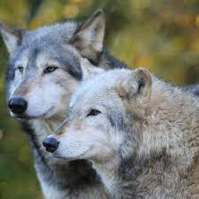

Our Team
The Hamilton University Wolfriding Team is preparing for another great season! Fans should get excited to see our rookie wolfdog, Cookie, on the ice. He will of course share ice time with veteran wolfdog, Juniper, who continues to be a formidable member of our team.
1 GOALIE: Alanna Gutierez
1A GOALIE: Leo Bitya
2 WOLFRIDER: Julia Linn
4 LEFT WING: Nico Alvan
7 RIGHT WING: Appoline Gente
10 BASE: Oliver Xian
12 Center: August Myers
13 RIGHT WING: Jaz Litterman
15 WOLFRIDER: James Moden
16 BASE: Holden Moyes
17 CENTER: Livia Jasper
24 BASE: Colin Ruther
25 BASE: River Emerson
30 LEFT WING: Evan Salem
40 LEFT WING: India Daisymaye
56 CENTER: Oak Cypress
WOLFDOGS: Cookie and Juniper